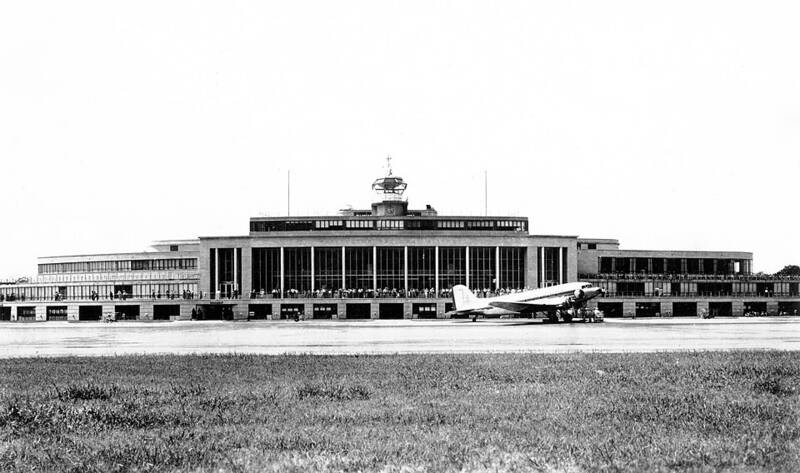

Washington flap
Washington, DC, 1952

Radar returns and lights over the capital on two July weekends led to the largest Pentagon press conference since World War II. 1
Open in the interactive Watcher
Related
Sources
- 1952 Washington, D.C., UFO incident Wikipedia